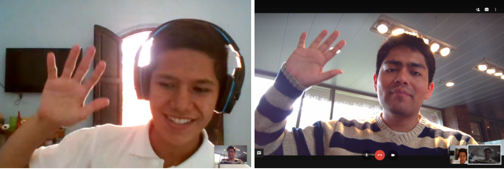
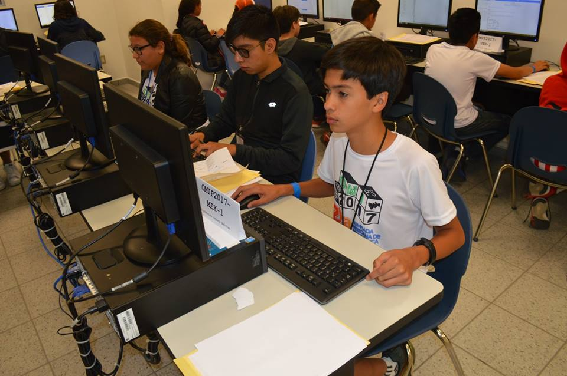

Initiatives

omegaUp for Schools
In our effort to improve the knowledge of students in programing, in March we released the beta version of omegaUp for Schools, a platform that helps teachers to use omegaUp in classrooms allowing teachers to create courses with specific content they need, either reuse content that we have or create their own.
With this new set of features, teachers now have a simple and organized platform that helps them add homeworks and tests to their courses and monitor the progress of their students. omegaUp for Schools has been very well received. As of June, we have over 50 courses created with 87 assignments and close to 200 students using it. Moreover, it will be used as the official training platform for the Mexican Olympiad in Informatics. Furthermore, we've also added support for Lua, and worked hard fixed several bugs reported by community. You can follow our progress in our blog and our GitHub repo.
omegaUp Mentors
In an effort to increase the Software Engineering talent in Latin America, this year we proudly started a new initiative: omegaUp Mentors: a program aimed to help our most active users to better develop their skills by connecting them with experienced people in the software industry to receive mentorship and career guidance for at least one year. Each month, the user with most points in omegaUp.com (Coder of the Month) will receive mentorship from volunteers working in companies such as Microsoft, Facebook, Amazon, and Google, among others. They will also be awarded a book that will help them better develop their technical skills. On January, Jorge Salazar, a student from Guanajuato, started his mentorship with Rafael Diaz, software engineer in Microsoft. In Jorge’s words: “… omegaUp appointed a Microsoft software engineer working in HoloLens to be my Mentor. He helped me by advising me about my career, how is it to be a software engineer, and the importance of education, among other things.”
Contests

The Mexican Olympiad in Informatics (OMI)
Every year the Mexican Committee of Informatics (COMI) organizes the Mexican Olympiad in Informatics (OMI). Thousands of students compete in multiple state qualification rounds to win a place into the national olympiad. Since 2011 omegaUp is the official contest platform of the OMI and partners with the organizing committee to make this event possible.

Last May, the 22nd OMI was held at the Instituto Tecnológico y de Estudios Superiores de Monterrey, Campus Querétaro with a participation of more than 100 students from all around México. This year the high school student Mariola Camacho Lie from Veracruz, México was the winner of this competition. The best ranked students will be prepared to represent México in the International Olympiad in Informatics (IOI). You can read and attempt the problemsets of Day 1 and Day 2 of competition in omegaUp.
Mexican Olympiad in Informatics for Elementary & Middle Schools (OMIPS)
Competitive programming for younger students needs a different approach, that's why omegaUp offers the option to create problems in a friendlier language called Karel which has proven to be a great tool in teaching the foundations of programming skills to the Elementary and middle schools students. We believe that the earlier the kids start programming, the more opportunities they will have to succeed in this field.
On February omegaUp hosted the 2nd Mexican Olympiad in Informatics for elementary & middle Schools, an online contest aimed to increase awareness of Computer Science among elementary and middle school students. This year 521 students participated in the first round of the contest where the best 30 were invited to the final round held at the Mexican Olympiad in Informatics 2017 in Querétaro, México. Ozymandias Cepeda Beltran from Estado de México was the National Winner of the elementary level. On the middle School category, Luis Gerardo Ortiz Cruz from México City was the National Winner.

1st Peruvian Online Competition in Informatics 2017
The recently created Olympic Peruvian Federation in Informatics held their first nation-wide programming competition for high school students. The best students were invited to conform the Peruvian team at Iberoamerican Competition of Informatics (CIIC) 2017.
More than 20 students from multiple cities from Peru participated: Arequipa, Callao, Chepen, Cusco, Ica, Lima, Piura, Pucallpa, Puno, and Tacna. Previous efforts of the Federation focused on the city of Arequipa. However, with this competition, the Peruvian Federation expects it to mark the beginning of the development of the informatics among young students in the whole country. You can read more about this competition in our blog and in the OPI website.
Coding Cup 2017 organized by ITSUR
Last May the Instituto Tecnológico del Sur de Guanajuato (ITSUR) organized the Guanajuato State Coding Cup 2017. The event was held at their campus located in the city of Uriangato, Guanajuato, México and they used omegaUp.com as the competition platform. 42 teams from 11 different high-schools and universities participated in this edition of the Coding Cup. The winner of this competition was the local ITSUR team "define TriLCT 404", whereas the best High School team was "Prepa Tec Monterrey" (5th Place) from the Instituto Tecnológico de Estudios Superiores de Monterrey, Campus Celaya.